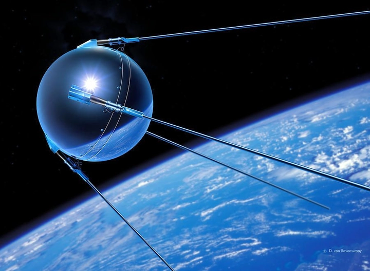
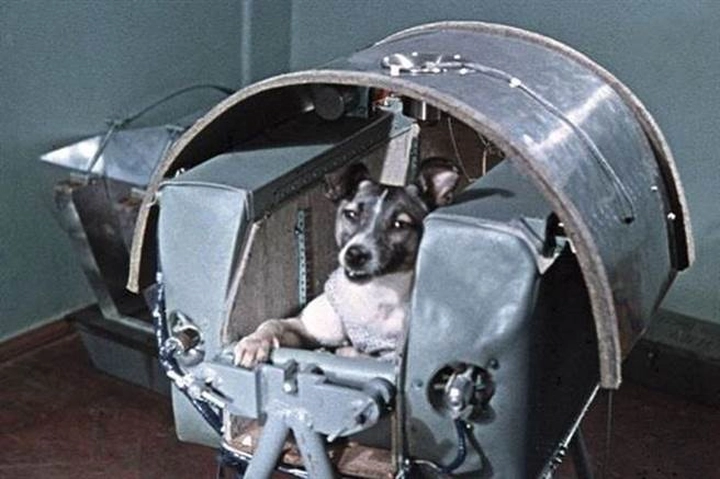
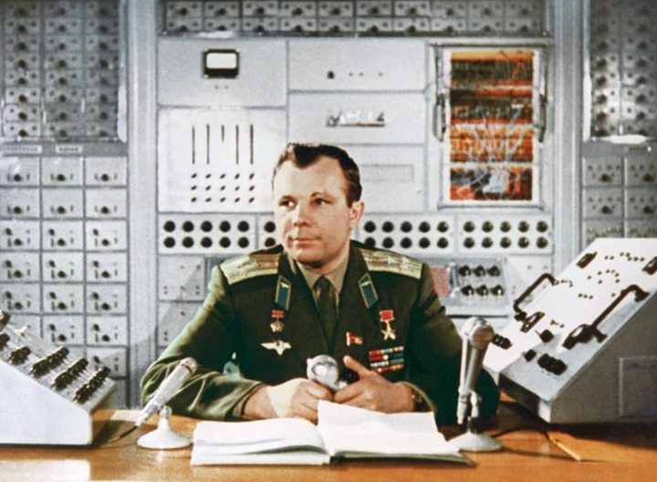
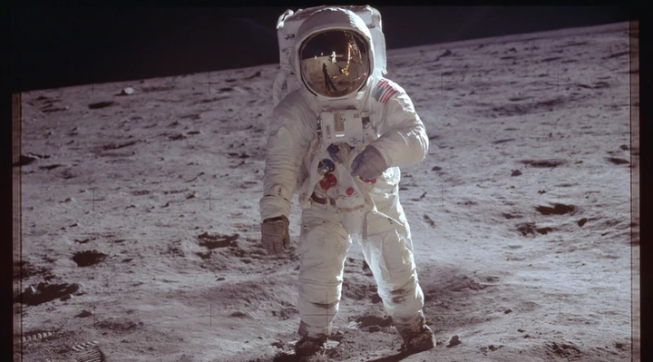

Cuộc đua khám phá không gian trong Chiến tranh Lạnh giữa Liên Xô và Mỹ
Cuộc đua khám phá không gian (Space Race) là một trong những biểu tượng rõ ràng nhất của Chiến tranh Lạnh — nơi mà khoa học, chính trị, và tham vọng quốc gia hòa quyện trong một cuộc chạy đua không tiếng súng. Từ cuối thập niên 1940 đến đầu 1970, Liên Xô và Hoa Kỳ không chỉ cạnh tranh trong lĩnh vực vũ khí hạt nhân, mà còn mở rộng cuộc đối đầu lên tận bầu trời — với mục tiêu chinh phục không gian vũ trụ.
Đằng sau những vụ phóng tên lửa, các sứ mệnh Mặt Trăng hay trạm không gian là cả một câu chuyện về lòng tự tôn dân tộc, niềm kiêu hãnh khoa học và khát vọng vươn tới điều chưa từng có trong lịch sử loài người.
1. Nguồn gốc của cuộc đua không gian
Sau Thế chiến II, thế giới bước vào thời kỳ căng thẳng chưa từng có — Chiến tranh Lạnh giữa hai siêu cường là Hoa Kỳ và Liên Xô. Mặc dù không đối đầu trực tiếp bằng quân sự, nhưng cả hai quốc gia đều tìm mọi cách chứng minh sức mạnh vượt trội của mình, từ kinh tế, khoa học, cho đến công nghệ quân sự. Một trong những lĩnh vực thể hiện rõ rệt nhất sự cạnh tranh này chính là khám phá không gian – nơi mà sức mạnh công nghệ và trí tuệ được đưa lên tầm cao mới, vượt khỏi bầu khí quyển Trái Đất.
Nguồn gốc của cuộc đua này có thể truy ngược về công nghệ tên lửa V-2 mà Đức Quốc Xã phát triển trong Thế chiến II. Sau khi chiến tranh kết thúc, cả Mỹ và Liên Xô đều gấp rút thu hồi các nhà khoa học Đức, đặc biệt là Wernher von Braun – người sau này trở thành kiến trúc sư chính của chương trình tên lửa Mỹ. Cùng thời điểm đó, Liên Xô cũng tuyển mộ hàng trăm kỹ sư và kỹ thuật viên Đức để phát triển chương trình tên lửa của riêng mình, dẫn đầu bởi Sergei Korolev, nhà thiết kế vĩ đại được mệnh danh là “cha đẻ của ngành du hành vũ trụ Liên Xô”.
Những năm 1950, cả hai bên đều nhận ra rằng công nghệ tên lửa không chỉ mang ý nghĩa quân sự, mà còn có thể được sử dụng cho mục đích khoa học – cụ thể là phóng vệ tinh và khám phá vũ trụ. Tuy nhiên, động cơ sâu xa vẫn là chứng minh ưu thế hệ tư tưởng:
-
Với Liên Xô, thành tựu không gian là bằng chứng cho thấy chủ nghĩa xã hội ưu việt hơn phương Tây.
-
Với Hoa Kỳ, đó là thước đo sức mạnh khoa học và công nghệ của nền dân chủ tư bản.
Khi Liên Xô phóng thành công tên lửa đạn đạo R-7 Semyorka, loại tên lửa đầu tiên có khả năng mang đầu đạn hạt nhân xuyên lục địa, thế giới bắt đầu hiểu rằng không gian không chỉ là nơi để quan sát các vì sao — mà là mặt trận chiến lược mới, nơi quyền lực và sự thống trị có thể được quyết định bằng từng quỹ đạo bay.
Chính trong bối cảnh ấy, kỷ nguyên khám phá không gian chính thức được khởi động. Không còn là những giấc mơ viễn tưởng trong tiểu thuyết khoa học, việc bay ra khỏi Trái Đất đã trở thành mục tiêu quốc gia — một cuộc đua khốc liệt giữa hai hệ tư tưởng lớn nhất thế kỷ XX.
2. Sputnik 1 – Sự kiện mở màn lịch sử
Ngày 4 tháng 10 năm 1957, Liên Xô khiến cả thế giới sững sờ khi phóng thành công Sputnik 1, vệ tinh nhân tạo đầu tiên của loài người. Quả cầu kim loại nhỏ bé, đường kính chỉ 58 cm và nặng 83,6 kg, phát ra tín hiệu radio “bíp bíp” vang vọng khắp Trái Đất. Âm thanh tưởng chừng đơn giản đó lại là tuyên bố hùng hồn rằng nhân loại đã bước vào kỷ nguyên không gian, và rằng Liên Xô đã đi trước Mỹ một bước.

Đối với người dân Liên Xô, đây là niềm tự hào dân tộc to lớn, minh chứng cho sức mạnh của khoa học Xô Viết. Nhưng với người Mỹ, Sputnik lại trở thành cơn địa chấn tinh thần: báo chí Mỹ gọi đó là “cú sốc Sputnik”, còn các chính trị gia thì lo ngại rằng Liên Xô có thể phóng đầu đạn hạt nhân từ không gian. Hàng loạt chương trình giáo dục, nghiên cứu và đầu tư công nghệ tại Mỹ được khởi động ngay sau đó.
Sputnik 1 không chỉ mở màn cho cuộc đua công nghệ, mà còn thay đổi toàn bộ tư duy của nhân loại về vị trí của mình trong vũ trụ. Lần đầu tiên trong lịch sử, con người đã có thể chế tạo một vật thể do mình tạo ra bay quanh Trái Đất — một bước ngoặt đánh dấu khởi đầu của kỷ nguyên khám phá không gian hiện đại.
3. Hoa Kỳ phản ứng: Sự ra đời của NASA
Sự kiện Sputnik khiến Hoa Kỳ hoảng loạn chiến lược. Tổng thống Dwight D. Eisenhower hiểu rằng Mỹ không thể để Liên Xô thống trị không gian — vì điều đó đồng nghĩa với việc thua cả về quân sự lẫn tâm lý. Chỉ trong vòng chưa đầy một năm, vào ngày 29 tháng 7 năm 1958, Quốc hội Mỹ đã thông qua đạo luật thành lập NASA (National Aeronautics and Space Administration) – Cơ quan Hàng không và Vũ trụ Hoa Kỳ.
NASA ra đời nhằm thống nhất mọi dự án nghiên cứu không gian rời rạc trước đó, vốn nằm rải rác ở quân đội, hải quân và không quân. Hàng nghìn kỹ sư, nhà vật lý, và chuyên gia tên lửa được tập hợp về một mái nhà chung. Đây không chỉ là cơ quan khoa học — mà là biểu tượng của khát vọng quốc gia, nơi thể hiện niềm tin rằng nước Mỹ có thể chinh phục vũ trụ bằng sức mạnh sáng tạo.
Sự ra đời của NASA cũng đánh dấu thời kỳ vàng son của công nghệ Mỹ. Trong vòng vài năm, cơ quan này phát triển các chương trình như Mercury, Gemini, và sau đó là Apollo — những nỗ lực chuẩn bị cho việc đưa con người lên Mặt Trăng. Không gian không còn là lĩnh vực dành riêng cho các nhà khoa học – nó trở thành chiến trường biểu tượng giữa hai cường quốc, nơi danh dự và uy tín quốc gia được cân đo qua từng chuyến bay.
4. Chú chó Laika và chuyến bay đầu tiên vào quỹ đạo
Chỉ một tháng sau Sputnik 1, vào ngày 3 tháng 11 năm 1957, Liên Xô tiếp tục gây chấn động thế giới với Sputnik 2, mang theo Laika – sinh vật đầu tiên của Trái Đất bay vào quỹ đạo. Laika, một chú chó cái hoang được chọn vì khả năng chịu đựng tốt và tính ngoan ngoãn, đã trở thành biểu tượng của sự hy sinh cho khoa học.

Con tàu Sputnik 2 nặng hơn 500 kg, được trang bị hệ thống cung cấp oxy, thức ăn và các cảm biến theo dõi nhịp tim, hơi thở và phản ứng sinh lý của Laika. Dù chú chó không sống sót — do nhiệt độ tăng quá cao sau khi tàu bay vào quỹ đạo — nhưng nhiệm vụ này vẫn được xem là một bước tiến vĩ đại, chứng minh rằng sinh vật sống có thể tồn tại trong môi trường không trọng lực ít nhất trong thời gian ngắn.
Câu chuyện của Laika khiến cả thế giới xúc động. Nhiều tranh luận đạo đức nổ ra về việc hy sinh động vật cho khoa học, nhưng không thể phủ nhận rằng Laika đã mở đường cho con người bay vào không gian. Sau này, Liên Xô đã vinh danh Laika như một người tiên phong dũng cảm, và hình ảnh chú chó nhỏ trên nền trời sao trở thành biểu tượng của sự khám phá đầy can đảm của nhân loại.
5. Yuri Gagarin – Người đầu tiên bay vào vũ trụ
Ngày 12 tháng 4 năm 1961, thế giới một lần nữa hướng về Liên Xô khi Yuri Gagarin, phi công trẻ 27 tuổi, trở thành người đầu tiên trong lịch sử bay vào vũ trụ trên tàu Vostok 1. Chuyến bay kéo dài 108 phút, trong đó Gagarin hoàn thành một vòng quanh Trái Đất trước khi trở về an toàn.
Khoảnh khắc Gagarin hô lên “Poyekhali!” (“Đi thôi!”) trước khi tàu rời bệ phóng, đã trở thành biểu tượng bất tử của kỷ nguyên không gian. Ông trở về trong vòng tay chào đón nồng nhiệt của hàng triệu người dân Liên Xô và nhanh chóng trở thành anh hùng toàn cầu — không chỉ của nước Nga, mà của cả nhân loại.

Gagarin chứng minh rằng con người có thể rời khỏi Trái Đất, bay trong quỹ đạo và sống sót trở về, mở ra cánh cửa mới cho kỷ nguyên du hành vũ trụ có người lái. Thành công này khiến Liên Xô vượt xa Mỹ trong cuộc đua không gian, tạo áp lực khổng lồ lên chính quyền của Tổng thống John F. Kennedy. Và chính áp lực ấy đã dẫn đến lời tuyên bố lịch sử năm 1961: Mỹ sẽ đưa con người lên Mặt Trăng trước khi thập kỷ kết thúc.
Từ Laika đến Gagarin, chỉ trong vòng bốn năm, Liên Xô đã thay đổi hoàn toàn nhận thức của nhân loại về khả năng vươn ra vũ trụ. Còn với thế giới, đó là thời khắc chứng kiến giới hạn của con người bị phá vỡ — khi giấc mơ chạm tới các vì sao trở thành hiện thực đầu tiên trong lịch sử.
6. Mỹ đáp trả bằng chương trình Mercury và Gemini
Sau cú sốc mang tên Yuri Gagarin, Hoa Kỳ bước vào giai đoạn chạy đua quyết liệt nhằm lấy lại vị thế trong không gian. Năm 1961, NASA chính thức triển khai chương trình Mercury, với mục tiêu tối thượng: đưa người Mỹ đầu tiên bay vào quỹ đạo Trái Đất. Dù có khởi đầu chậm hơn Liên Xô, nhưng từng bước, Mỹ đã thu hẹp khoảng cách. Alan Shepard trở thành người Mỹ đầu tiên bay vào không gian vào tháng 5 năm 1961, và John Glenn là người đầu tiên hoàn thành một vòng bay quanh Trái Đất vào năm 1962 — đánh dấu bước ngoặt quan trọng trong hành trình chinh phục vũ trụ của Hoa Kỳ.
Tuy nhiên, NASA hiểu rằng chỉ bay quanh Trái Đất là chưa đủ. Để đến được Mặt Trăng, con người cần nhiều hơn thế — phải học cách điều khiển, ghép nối tàu, di chuyển ngoài không gian, và sống trong môi trường không trọng lực dài ngày. Đó là lý do chương trình Gemini (1965–1966) ra đời. Mười chuyến bay có người lái của Gemini giúp NASA thử nghiệm những công nghệ cốt lõi: ghép tàu trên quỹ đạo, đi bộ ngoài không gian (EVA), và tái nhập khí quyển an toàn.
Các phi hành gia như Neil Armstrong, Buzz Aldrin, John Young đã được rèn luyện, thử thách giới hạn thể lực và tinh thần trong suốt hai chương trình này. Chính họ sau đó trở thành những người tiên phong trong kỷ nguyên Apollo, minh chứng rằng thành công của Hoa Kỳ trên Mặt Trăng là kết quả của một thập kỷ tích lũy, học hỏi và kiên cường không ngừng.
7. Bài phát biểu lịch sử của Tổng thống Kennedy
Ngày 25 tháng 5 năm 1961, Tổng thống John F. Kennedy bước lên bục Quốc hội Hoa Kỳ và đọc bài phát biểu đã đi vào lịch sử:
“Chúng ta chọn lên Mặt Trăng... không phải vì điều đó dễ dàng, mà vì nó khó khăn.”
Lời tuyên bố ấy không chỉ là cam kết chính trị mà là lời thách thức táo bạo gửi tới cả thế giới — rằng nước Mỹ sẽ đưa con người lên Mặt Trăng và đưa họ trở về an toàn trước khi thập kỷ kết thúc. Trong bối cảnh Liên Xô đang dẫn trước, phát biểu này mang ý nghĩa như một “lời tuyên chiến” trong lĩnh vực khoa học – công nghệ.
Từ khoảnh khắc ấy, NASA được trao ngân sách khổng lồ và quyền lực gần như tuyệt đối trong lĩnh vực nghiên cứu không gian. Các trường đại học, viện khoa học, và hàng loạt công ty tư nhân được huy động để phục vụ mục tiêu quốc gia này. Không chỉ là một dự án kỹ thuật, Apollo trở thành biểu tượng của tinh thần Mỹ, của niềm tin rằng không có giới hạn nào cho con người nếu họ dám ước mơ và hành động.
Bài phát biểu của Kennedy cũng thay đổi cách thế giới nhìn nhận về không gian: từ chiến trường công nghệ trở thành biểu tượng của khát vọng nhân loại. Nó đặt nền móng cho một trong những thành tựu vĩ đại nhất của thế kỷ XX — bước chân đầu tiên của con người trên Mặt Trăng.
8. Chương trình Apollo – Hành trình đến Mặt Trăng
Sau lời tuyên bố đầy cảm hứng của Kennedy, NASA chính thức khởi động chương trình Apollo — dự án không gian vĩ đại nhất trong lịch sử loài người. Diễn ra từ 1961 đến 1972, Apollo tiêu tốn hơn 25 tỷ USD (tương đương hơn 200 tỷ USD ngày nay) và huy động trên 400.000 kỹ sư, nhà khoa học, công nhân và chuyên gia. Mục tiêu duy nhất: đưa con người lên Mặt Trăng và đưa họ trở về an toàn.

Tuy nhiên, con đường đến chiến thắng không hề dễ dàng. Apollo 1 (1967) là thảm kịch khi ba phi hành gia thiệt mạng trong một vụ cháy trên bệ phóng trong quá trình thử nghiệm. Dù vậy, NASA không dừng lại — họ rút kinh nghiệm, cải tiến hệ thống an toàn, và tiếp tục tiến lên.
Các chuyến bay kế tiếp như Apollo 7, 8, 10 lần lượt thử nghiệm từng giai đoạn: từ hoạt động trên quỹ đạo Trái Đất, bay quanh Mặt Trăng, đến mô phỏng hạ cánh thật sự. Và cuối cùng, Apollo 11 — ngày 20 tháng 7 năm 1969, Neil Armstrong và Buzz Aldrin đặt chân lên Mặt Trăng trong sự chứng kiến của hơn 600 triệu người trên toàn thế giới.
“Đây là một bước đi nhỏ của con người, nhưng là bước nhảy vĩ đại của nhân loại.”
Khoảnh khắc ấy không chỉ là chiến thắng của Hoa Kỳ trước Liên Xô, mà còn là chiến thắng của toàn nhân loại – khi con người lần đầu tiên chạm đến một thiên thể khác ngoài Trái Đất. Apollo trở thành biểu tượng của trí tuệ, lòng dũng cảm và khát vọng khám phá vô tận.
9. Liên Xô sau Mặt Trăng – Trạm không gian và nghiên cứu lâu dài
Khi Mỹ ăn mừng chiến thắng Apollo 11, Liên Xô không hề từ bỏ giấc mơ chinh phục vũ trụ. Họ âm thầm chuyển hướng chiến lược: thay vì tập trung vào Mặt Trăng, Liên Xô bắt đầu khai phá lĩnh vực nghiên cứu không gian dài hạn.
Năm 1971, Liên Xô phóng thành công Salyut 1 – trạm không gian có người ở đầu tiên trong lịch sử. Dù chuyến bay đầu tiên kết thúc bi kịch khi ba phi hành gia thiệt mạng trong quá trình trở về, chương trình Salyut vẫn được tiếp tục và mở rộng. Sau đó, vào năm 1986, họ ra mắt Mir – trạm không gian tiên tiến hơn, có thể duy trì con người sinh sống trong nhiều tháng, thậm chí nhiều năm trên quỹ đạo.
Trong khi Mỹ tập trung vào các sứ mệnh ngắn hạn, Liên Xô trở thành chuyên gia trong việc duy trì sự sống ngoài không gian, nghiên cứu ảnh hưởng lâu dài của môi trường không trọng lực đối với cơ thể con người. Những kinh nghiệm quý báu từ Salyut và Mir sau này trở thành nền tảng cho Trạm Vũ trụ Quốc tế (ISS) – nơi các nhà du hành từ nhiều quốc gia cùng làm việc trong môi trường hợp tác.
Dù không có chiến thắng mang tính biểu tượng như “bước chân đầu tiên lên Mặt Trăng”, Liên Xô vẫn giữ vai trò người tiên phong trong việc xây dựng cơ sở hạ tầng cho sự hiện diện lâu dài của con người ngoài Trái Đất.
10. Di sản của cuộc đua không gian
Khi Chiến tranh Lạnh dần kết thúc, cuộc đua không gian giữa Mỹ và Liên Xô cũng hạ nhiệt. Nhưng di sản mà nó để lại vẫn lan tỏa mạnh mẽ cho đến tận ngày nay. Cuộc cạnh tranh khốc liệt ấy đã thúc đẩy sự ra đời của hàng loạt công nghệ nền tảng: tên lửa đẩy mạnh mẽ hơn, máy tính thu nhỏ, vật liệu chịu nhiệt, hệ thống định vị GPS và công nghệ viễn thông vệ tinh.
Không gian, từ chỗ là biểu tượng của sự đối đầu, đã trở thành biểu tượng của hợp tác quốc tế. Hai đối thủ từng đối đầu khốc liệt – Mỹ và Nga – giờ đây cùng làm việc trên Trạm Vũ trụ Quốc tế (ISS), chia sẻ dữ liệu, công nghệ và con người.
Cuộc đua không gian đã mở rộng tầm nhìn của nhân loại, khiến chúng ta nhận ra rằng Trái Đất chỉ là một hành tinh nhỏ trong vũ trụ bao la. Nó nuôi dưỡng niềm tin rằng nếu con người có thể vượt qua chiến tranh và thù địch để cùng nhau chạm tới các vì sao, thì mọi giới hạn khác đều có thể được chinh phục.
Cuộc đua không gian không chỉ là cuộc cạnh tranh giữa hai cường quốc – mà là cuộc hành trình đầu tiên của loài người vươn ra ngoài Trái Đất, đặt nền móng cho một tương lai mà khám phá vũ trụ trở thành di sản chung của toàn nhân loại.